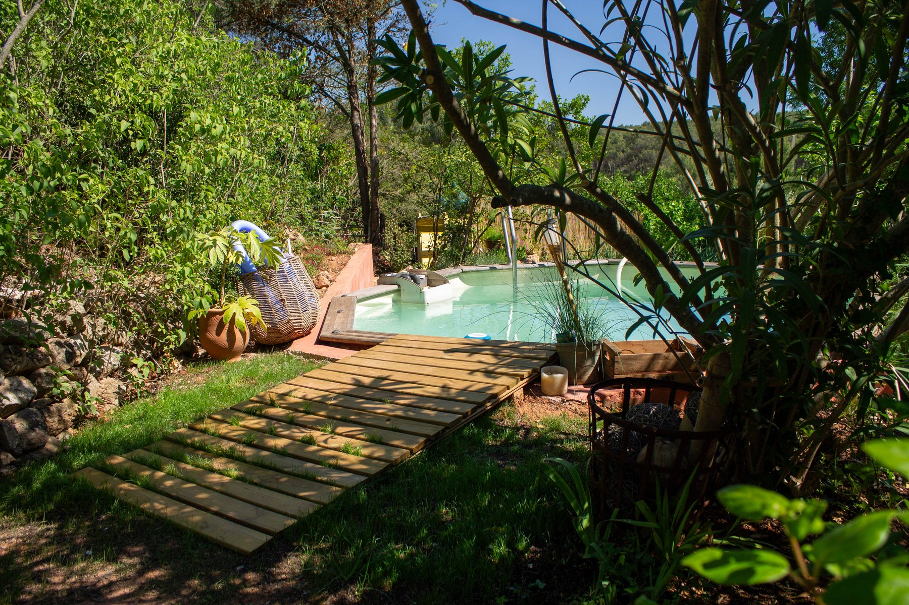
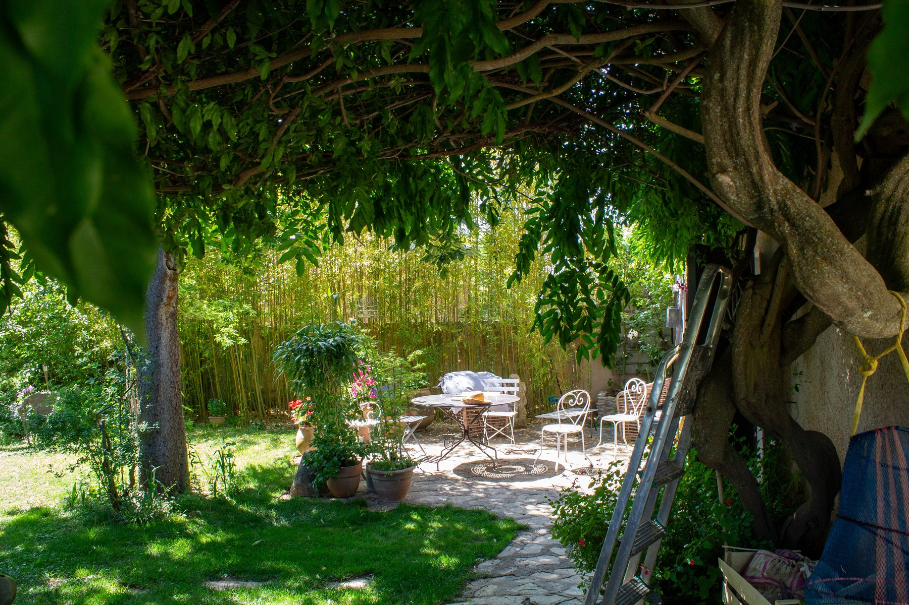
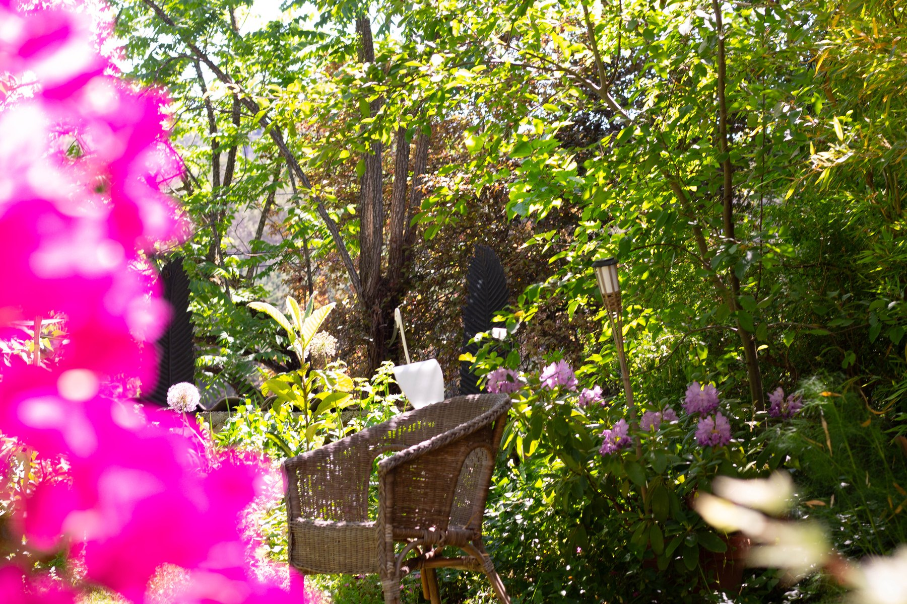

Beaurecueil · au pied de la Sainte-Victoire
Maison ancienne de charme près d’Aix-en-Provence
À 10 km d’Aix-en-Provence, une maison provençale entourée de verdure, avec jardin fleuri, terrasse, piscine privée et atmosphère fraîche en été.
Présentation
Une maison provençale au pied de la Sainte-Victoire
Située à Beaurecueil, à environ 10 km d’Aix-en-Provence, cette ancienne maison provençale de 110 m² offre un cadre calme et verdoyant, idéal pour des vacances en famille ou entre amis.
La maison séduit par son charme, ses murs épais, sa décoration soignée et son atmosphère fraîche en été. Le jardin fleuri, la terrasse ombragée et la piscine en font un lieu très agréable pour se reposer et profiter pleinement de la Provence.
La maison est mitoyenne, mais bien protégée par la végétation et une grande haie de bambous, sans vis-à-vis direct. L’environnement est calme, intime et propice à la détente.



La maison
Charme ancien, fraîcheur et douceur de vivre
La maison comprend 3 chambres : deux chambres avec lit en 160 cm et une chambre avec lit en 140 cm. Elle dispose également d’un salon, d’une cuisine équipée séparée, d’une salle de bain, ainsi que d’une ancienne pièce voûtée en pierres apparentes avec canapé-lit, particulièrement fraîche en été.
Chaque chambre dispose d’un ventilateur. La maison ne possède pas de climatisation, mais ses murs épais et son exposition permettent de conserver une fraîcheur naturelle appréciable pendant les fortes chaleurs.
À l’extérieur, vous profitez d’une terrasse, d’un jardin fleuri et verdoyant, d’un mobilier de jardin, d’un hamac, de chaises longues et d’une piscine privée semi-enterrée de 1,30 m de profondeur.
Galerie
La maison en images
Autour de la maison
Entre nature, Aix et Sainte‑Victoire
La maison se trouve dans un environnement calme et verdoyant, à proximité du petit village de Beaurecueil et des paysages de la Sainte‑Victoire.
Les petits commerces sont accessibles à proximité, et une grande surface se trouve à environ 4 km. Aix-en-Provence est à environ 10 km, ce qui permet de profiter d’un cadre très nature tout en restant proche des services et de la ville.
De nombreuses balades sont possibles autour de la maison. Un centre équestre se trouve à environ 700 m. Les plages et les calanques sont accessibles en voiture, notamment Cassis et la Méditerranée selon la circulation. Le Luberon, Marseille et les lacs de Provence offrent aussi de belles idées d’excursions.
- Beaurecueil, au pied de la Sainte‑Victoire
- Aix-en-Provence : environ 10 km
- Grande surface : environ 4 km
- Centre équestre : environ 700 m
- Cassis et les calanques : environ 40 km
- Marseille : environ 35 km
- Luberon : environ 45 min à 1 h selon destination
- Lacs de Provence : environ 1 h selon destination
Contact & réservation
Préparer votre séjour
La maison est louée pour des séjours de 7 jours minimum. Le tarif est à partir de 200 € par nuit, avec un prix dégressif selon la durée du séjour.
Pour consulter les disponibilités, les tarifs et les conditions de réservation, le plus simple est de passer par l’annonce Le Bon Coin. Vous pouvez également envoyer une demande via le formulaire ci‑contre.